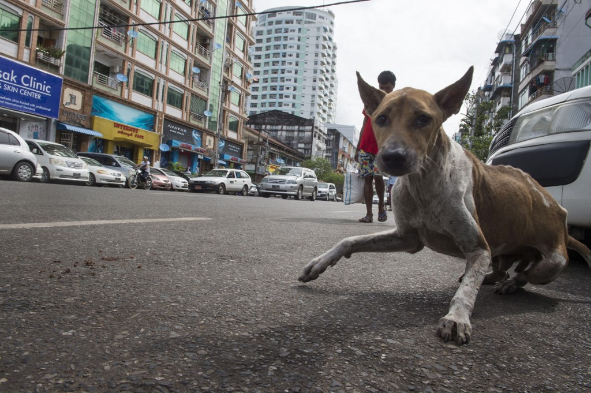

DoggieHaven Times City Campus Room No.316, Shop House No.2, Times City Complex, Kamayut Township, Yangon. Call Now : +959 960 623 563, +959 234 445 555 Mail To : doggiehaven@gmail.com
Looking for a Pet? Burmese Dogs Are in Need of Homes |
|
|
June 19, 2016 |
|
|  | |
Dogs on the Streets of Cities in MyanmarMyanmar has a rapidly-growing population of homeless dogs, particularly in the major cities. Without a policy or proper funding for population control, street dogs multiply quickly, eventually prompting YCDC (Yangon City Development Committee) in Yangon to start poisoning the strays in May 2016. These creatures suffer daily due to lack of food and shelter, abuse and diseases since Myanmar has no formal system of animal shelters. Homeless animals have no choice but to roam the streets, posing both a nuisance and a danger. In places like Yangon, strays are regularly fed poisoned meat or clubbed to death by authorities as a way to tackle the overpopulation. There are veterinary services in the country, but they mainly care for pedigree animals that Myanmar people prefer to keep as pets. Are stray dogs becoming a big problem?The main issue of growing number of stray dogs is potential for rabies disease. Human rabies cases in Yangon General Hospital are estimated as 60 per year, out of 50,000 people bitten by rabid or suspected rabid dogs. To control rabies, public awareness on the impact of rabies and dog population control need to be strengthened. Keeping Burmese dog as your petBurmese Dogs may be the best for you compared to many other kinds breeds. Since there are many dogs in citites, essentially there is no initial buying cost for you. You can even get an adult dog from dogs’ shelters which are located in the outskirts of Yangon. They can resist the hot season in Myanmar, since they have long accustomed to it. Burmses dogs do not require much food to sustain them mainly because they are adapted to living on meagre supplies here. The grooming needs are also minimal Behavior and Temperament Burmese Dogs are very loyal to their masters.They are also very good guard dogs. They won’t allow strangers to come in the place of their ‘pack’, without challenging them. They will first bark at them agreesively and can even bite the stranger possibly. At the same time, Burmese dogs are not the petting type, as they do have an independent streak. If you are really keen to have a Burmese Dog as your pet, you can first approach to a local or expat who is having these dogs for an informal discussion and then pick up one from streets of cities or shelters, then bring it to the veterinarian to review its health condition. Burmese dogs can also be trained even though they are no where near top notch, in terms of dog intelligence. |
DoggieHaven Times City Campus Room No.316, Shop House No.2, Times City Complex, Kamayut Township, Yangon. Call Now : +959 960 623 563, +959 234 445 555 Mail To : doggiehaven@gmail.com